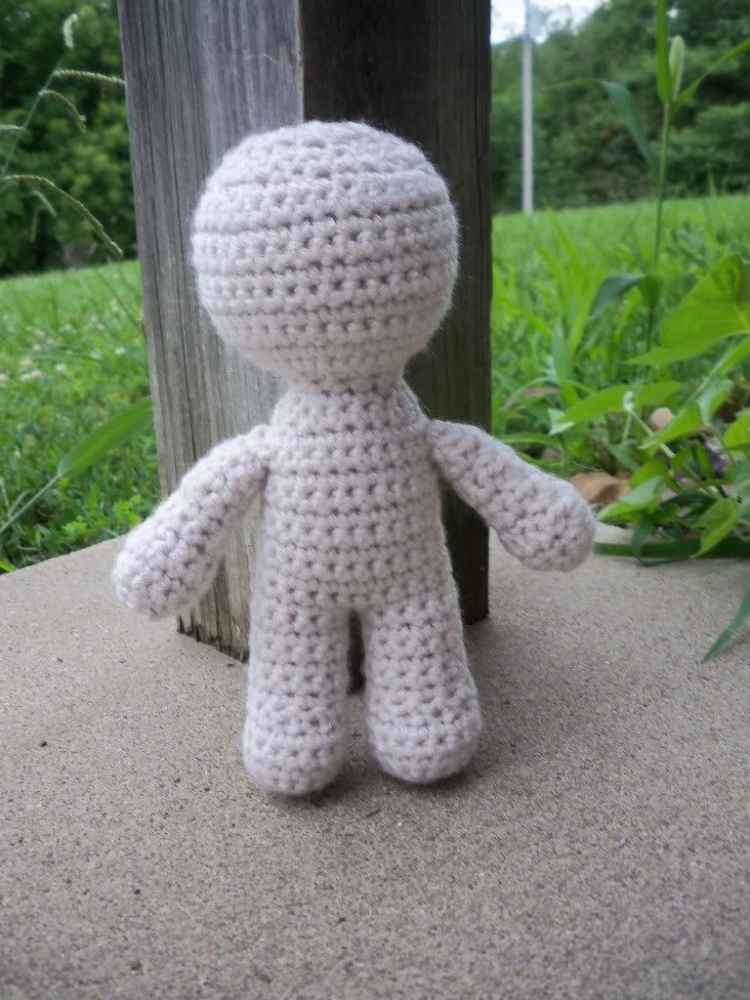
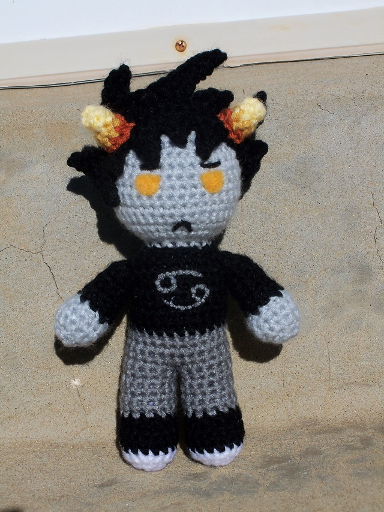
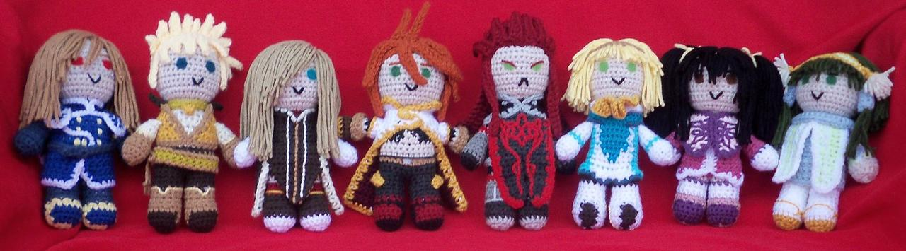
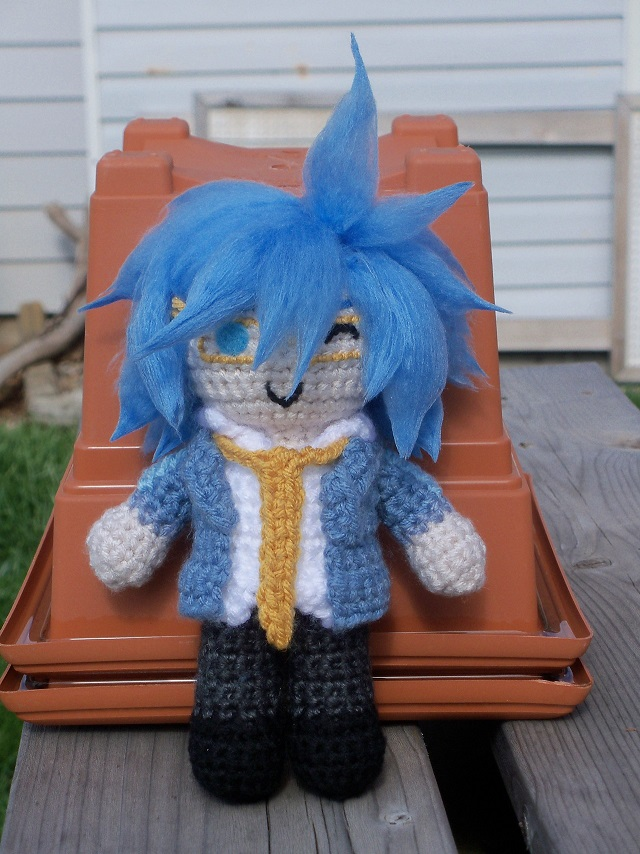

Hello there! My name's Maggie, and I've been creating cute, crocheted creatures (also known as "amigurumi") for about 8 years now. I'm most well know (not that I'm that well known) for my adorable birds.

And while birds and other animals are fun, what kind of well rounded person would I be if I couldn't make dolls too?
Now this one may not look like much (unless what you're looking specifically for a voodoo doll), but it makes a great base for pretty much anyone, if you're willing to put in enough details. The only limit is your imagination!
Here are some examples of this guy in action!


I know you're probably thinking, "Gosh, that sure looks like fun! I wish I could make cute dolls like that! But how?" Well friend, you're in luck! I'm gonna give you exclusive access to my doll pattern base, free of charge!
CROCHETED DOLL BASE
Right leg
ch 2, 5 sc in 2nd ch from hook (5)
2sc in each st around (10)
(2sc in first st, sc in next) x5 (15)
sc in each st around for 3 rows (15)
sc in first 5 st, 3 dec over next 6 st, sc in last 4 st (12)
sc in each st around for 6 rows (12)
fo and stuff
Left Leg, Body, and Head
(Same as right leg, but don't fo)
sc in first 10 sc
Now take the right leg and sc into the 4th st from the join where you fo'd. sc in remaining 11 sc in right leg. sc in last 2 st in left leg (24)
sc in each st around for 10 rows (24)
(sc in first 6 st, 3 dec over next 6 st) x2 (18)
(3 dec over next 6 st, sc in next 3 st) x2 (12)
sc in each st around for 1 row (12)
Begin stuffing body
2sc in each st around (24)
(2sc in first st, sc in next st) x12 (36)
sc in each st around for 8 rows (36)
(sc in next 4 st, dec over next 2 st) x6 (30)
(sc in next 3 st, dec over next 2 st) x6 (24)
(sc in next 2 st, dec over next 2 st) x6 (18)
Begin stuffing head
(sc in nest st, dec over next 2 st) x6 (12)
6 dec over 12 st
finish stuffing, fo, and sew closed.
Arms (make 2)
ch 2, 4 sc in 2nd ch from hook (4)
2 sc in each st around (8)
(2sc in first st, sc in next st) x4 (12)
sc in each st around for 2 rows (12)
(sc in first st, dec over next 2 st) x4 (8)
sc in each st around for 5 rows (8)
fo
stuff, but do not stuff so much that you can't flatten the open end. sew the opening closed so that the top is flattened rather than rounded. Do not cut off the tail after sewing closed.
Assembly
pin the arms onto the body so that the hands point downward. use the tail that you used to sew the arms shut to sew them to the body.
Oh, and if you're already a amigurumi master like no one ever was, you've probably noticed that I commit the cardinal
sin of crocheting in joined rows rather than in joined or spiral rounds. Why? Well I'll tell you why!
- I switched based on a miscommunication from another artist regarding how they made their projects and haven't switched back
- Spiral rounds make color switching ugly
- While the join in joined rows is more visable, it's easier to control than the join in joined rounds
- I crochet a lot of flat, attached items which need to be done in rows, and the difference in textures is off-putting to me
- The rowed texture is more interesting to me
- The reversible projects would be impossible to do without joined rows
- You're not my real mom, you can't tell me what to do, I do what I want
If you're wondering about the name I chose for this little corner of the internet, I point you to the below:


By the by, these little cuties are available at my store Crochetmon Shop. Check them out!